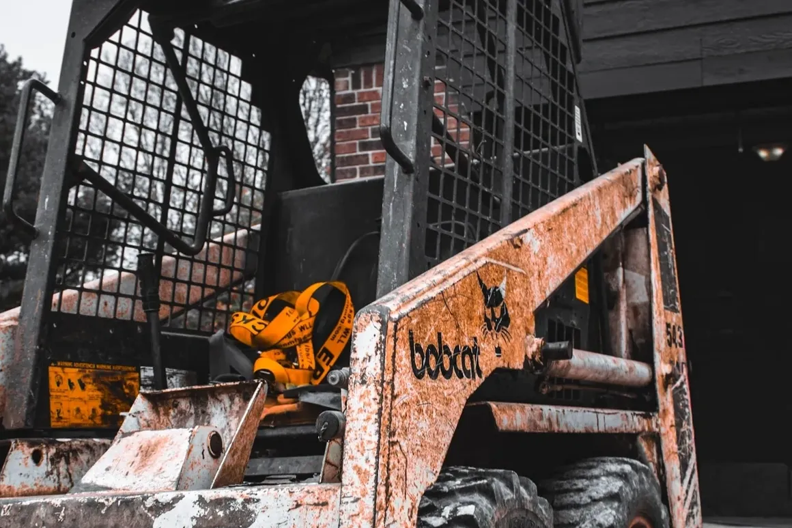

Multi-Layer Base Construction
Aggregate goes down in proper layers across your Shelby County property, each compacted before the next.

Hoosier Dirt & Gravel installs, regrades, and repairs gravel driveways for residential and farm properties across Fountaintown and Shelby County. Every project starts with proper grading, base preparation, and drainage planning. That's the work that determines whether a gravel driveway holds for fifteen years or washes out the first wet Fountaintown spring. In Fountaintown, we keep gravel drives properly crowned and graded so they shed water instead of rutting after a hard Indiana rain.
Fountaintown driveways take a beating. Heavy spring rains, hard freeze-thaw cycles through January and February, and summer ruts from farm equipment and daily traffic. Most driveway failures in Shelby County trace back to a bad base or poor drainage. We handle both from day one.
Aggregate goes down in proper layers across your Shelby County property, each compacted before the next.
Proper crowning, culvert sizing, and water flow planning built into every Fountaintown install.
Mini excavator, mini skid steer, and full skid steer paid for. No rental markups passed to you.
The hands writing the estimate are the hands running the machines on your property.
Our process is built around Shelby County soil, Indiana freeze-thaw conditions, and the kind of traffic rural driveways actually see — whether that's farm equipment off a county road or daily commuter use near Fountaintown.
Walk the property to evaluate grade, drainage, and equipment access
Prep and compact the base with drainage planning built in for Indiana conditions
Place gravel in layers, then crown and finish grade for proper water runoff
Driveway problems in Shelby County start small and get expensive fast. The longer you wait through an Indiana winter, the more rock and labor it takes to fix come spring.

We work driveway projects year-round across Shelby County. Heavy spring rains or frozen ground in January may push scheduling for quality reasons.
Clearing access for our equipment and marking buried utilities ahead of arrival keeps projects safe and on schedule.
Most Shelby County residential driveways finish in 1–3 days. Larger farm lanes or full installs may run 4–7 days depending on length and access.
Quick answers to the questions we hear most often from property owners planning a project in Fountaintown.
It depends on length, the shape the base is in, how much drainage work it needs, and how easy the site is to get equipment onto. Most residential gravel driveways in Shelby County run between $1,500 and $5,000. We give you a free on-site estimate with materials, timeline, and total cost in writing before any work starts.
Most residential driveways in the Fountaintown area finish in one to three days. Longer farm lanes or full installs from scratch — common on rural Shelby County properties — can run four to seven days depending on length and site access.
Often, yes. If the base is still sound, regrading and fresh rock can bring a rutted or washed-out Shelby County drive back. If the base has failed underneath, we'll tell you straight and walk you through what it'll take to do it right.
That comes down to your traffic, your grade, and the look you're after. We'll talk through the options on-site and recommend what holds up best for your Shelby County property.
If your drive crosses a ditch or sits where water needs to pass under it, yes. We size and place the culvert as part of the driveway work so the drainage is handled from day one — important given how much water moves across Shelby County in a wet Indiana spring.